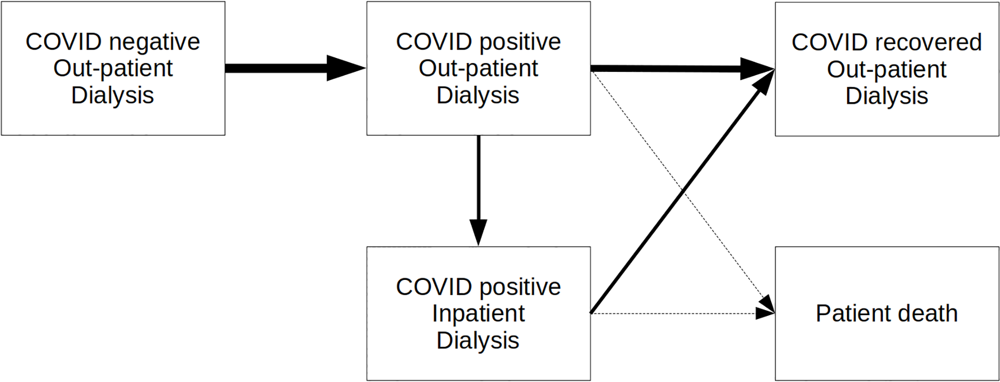
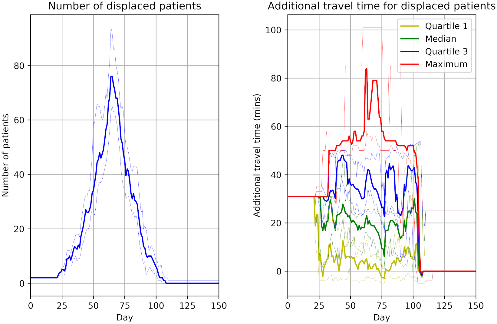

Summary
Type of model: Discrete event simulation (excluding sections of the paper relevant to another model - a Monte-Carlo vehicle routing model of patient transport)
Purpose of model: Model service delivery in dialysis network during change in COVID-19 cases.
How model was created:
- Python 3.8
- SimPy 3
- MatPlotLib
- STRESS reporting guidelines
- DES on Intel i9-7980XE CPU with 64GB RAM running Ubuntu 19.10 Linux
Context:
- Wessex - mixed urban/rural setting, renal dialysis services cares for 644 patients, nine centres. 75% of patients use patient transport services.
- COVID-positive patients treated seperately to COVID-negative.
Model design:
- Model change in inpatient and outpatient workload during pandemic at each dialysis unit in network. Estimate over three to six months. Estimate number of patients required to travel to different unit and change in travel time.
- Inputs: Patient location postcode. Travel time routine. Worst case time spread COVID Fergeson. Mortality rate, time patient COVID-positive before admission, and inpatient rate of stay were local parameters.
- Defined period (e.g. one year). Patients progress through phases of COVID (negative, positive, some with inpatient care, recovred, died). In each COVID state, model seeks to put them in appropriate unit and session, opening COVID-positive sessions in units that allow it. COVID-positive don’t mis with others.
- Run 30 times, show median and extremes.

- All patients receive dialysis 3 times a week. Each patient starts on either Monday or Tuesday.
- Have proportion of patients either fixed or sampled from stochastic distribution for phases of COVID state and care.
- COVID seperate from uninfected and recovered.

For allocation to units, use search strategy:
- COVID negative or recovered - look for place in current unit, if no space, find closest unit (by travel time) with available space
- COVID positive - put in Queen Alexandara, and if full, make capacity in Basingstoke. If new COVID session required, more all COVID negative patients in that session as per neg rules.
- COVID positive inpatient - all in Queen Alexandra (but allows search for unit with inpatients)
- Unallocated - if can’t allocate to any units, attempt again next day
Once every week, attempts to reallocate patients back to starting unit or closest available. This is so cared more nearby and to compress COVID positive patients into few units and sessions.
COVID positive converted back to COVID negative when no longer needed.
Results:
- States current median travel time from home to dialysis unit, and current capacity.
- Figures 2, 3, 4 show impact of COVID infecting 80% patients in next three months.
- Figure 2 - number of patients in each COVID state over 150 days
- Figure 3 - as figure 2, but divided by unit? and with diffferent categories shown.
- Figure 4 - patients displced from current unit, and travel time added
- Using half of Queen Alexandra and then Basingstoke for excess for COVID positive copes without any patients being unallocated to session and no need to reduce dialysis frequency.
- Reduces workflow in units not taking COVID positive patients.
- Displaced patients typically need 20 extra minutes to get to temporary care place (sometimes 50 minutes)



Discusion:
- Dialysis unit can cope with worst case spread. Requires reallocation of patients, will impact on ambulance and efficiency.
- Likely significant patient partessures, current capacity breached, consider moving dislaysi requipment during peak COVID positive.
- Transporting individually unsustainable.(Markov?)
- Model limitations - assumes can reallocate immediatley, assumes current capacity maintained (i.e. no staff shortage), not modelled timing, not included home dialysis.